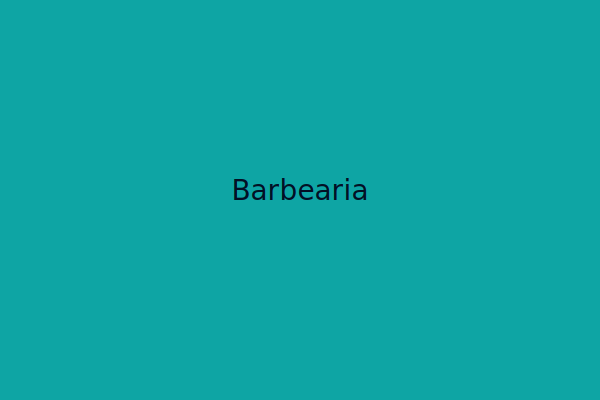

Preview do Sistema
Este é um exemplo visual do layout do sistema, focado em usabilidade e design limpo.
Testar Painel de DemonstraçãoSistema para Barbearia
Protótipo pensado para barbearias com agendamentos rápidos e integração com WhatsApp.
Funcionalidades Principais
- ✔ Agenda integrada com lembretes automáticos.
- ✔ Envio de notificações de agendamento via WhatsApp.
- ✔ Painel administrativo simples e intuitivo.
- ✔ Design responsivo, perfeito para celulares e tablets.
- ✔ Cadastro de clientes e histórico de serviços.